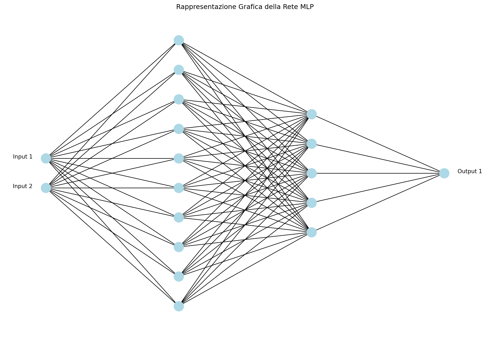
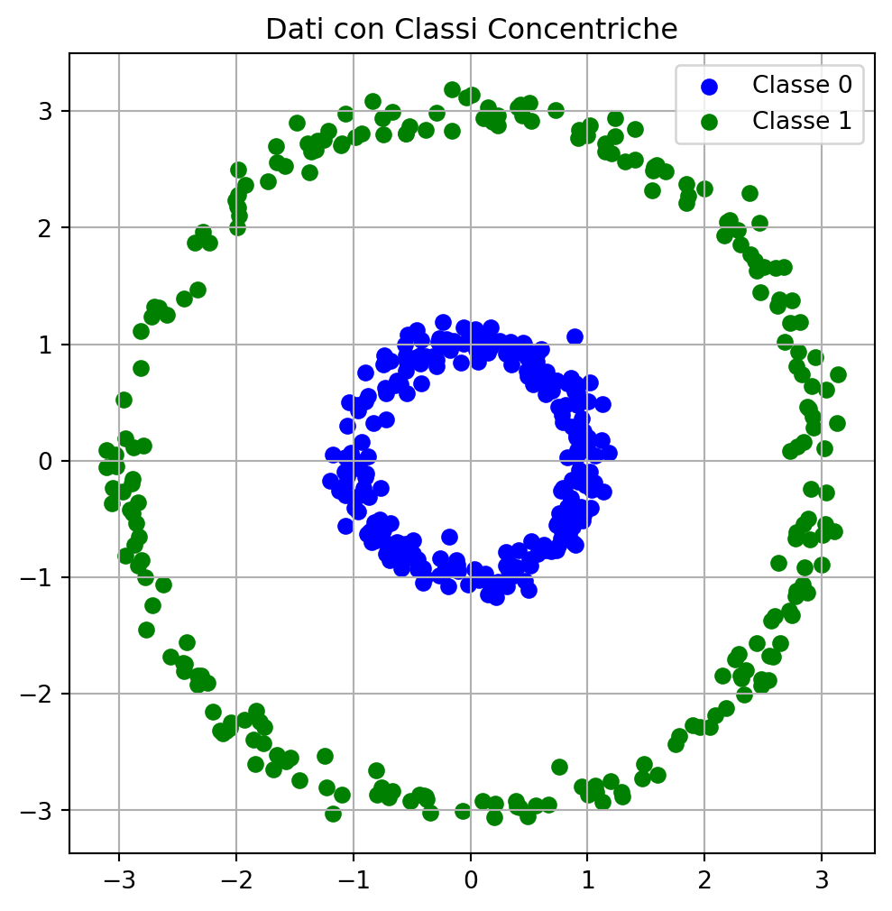
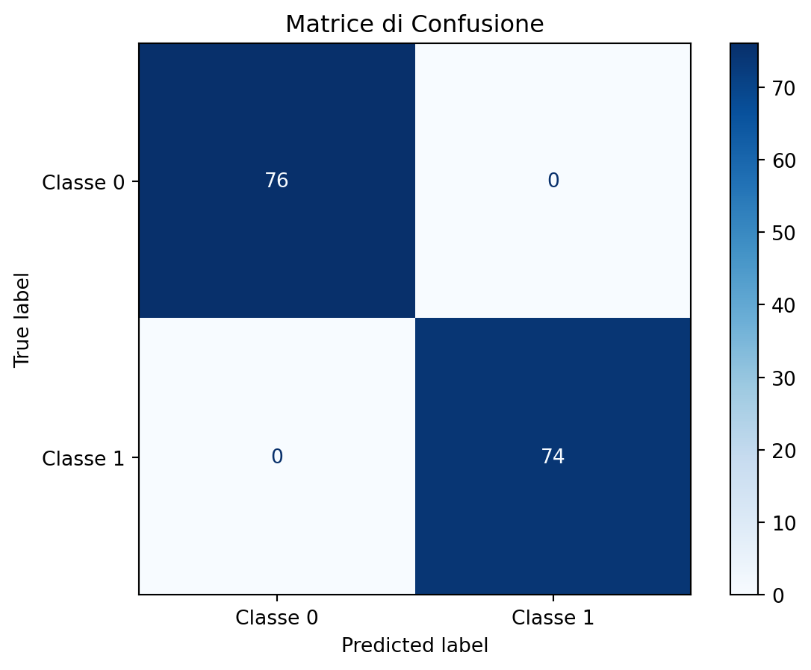
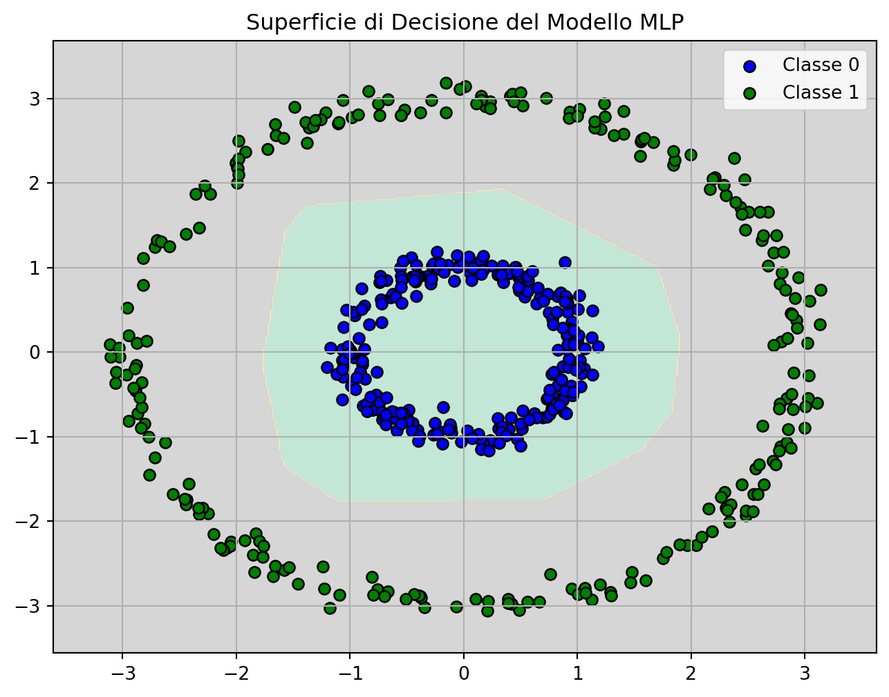
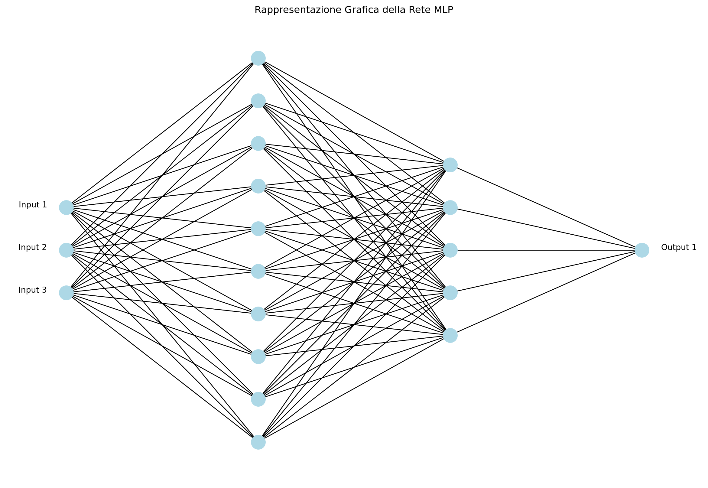
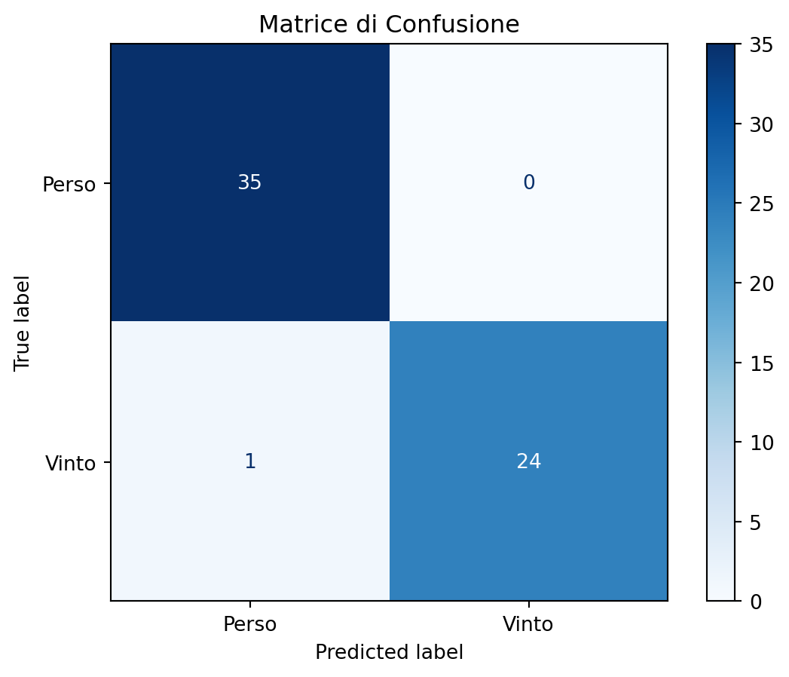

graph LR
A[Immagine Input] --> B[Applicazione Filtro]
B --> C[Feature Map]
B --> D[Scorrimento]
D --> |Ripeti| B
C --> E[Attivazione]
E --> F[Pooling]
F --> G[Prossimo Strato]
14 Deep learning
14.1 Introduzione
Il deep learning è una sottocategoria avanzata del machine learning che sfrutta reti neurali profonde per affrontare problemi complessi, caratterizzati da grandi quantità di dati e dalla necessità di apprendere rappresentazioni astratte e stratificate delle informazioni(Goodfellow, Bengio, and Courville 2016). Il viaggio nel deep learning inizia spesso con le Reti Neurali Multistrato (MLP), che rappresentano il primo passo verso la comprensione delle reti neurali profonde.
14.2 Reti Neurali Multistrato (MLP)
Le Reti Neurali Multistrato (MLP = Multi Layer Perceptron) sono una forma di rete neurale feedforward, composte da uno strato di input, uno o più strati nascosti e uno strato di output. Le MLP sono in grado di apprendere rappresentazioni non lineari dei dati grazie all’uso di funzioni di attivazione non lineari nei neuroni dei loro strati nascosti. Sebbene siano efficaci per molti compiti, le MLP tradizionali hanno una capacità limitata di affrontare problemi particolarmente complessi, poiché sono generalmente composte da pochi strati nascosti. L’addestramento delle MLP avviene attraverso l’algoritmo di backpropagation, che calcola e minimizza l’errore del modello aggiornando i pesi dei collegamenti tra i neuroni(Haykin 2009). Questa tecnica è fondamentale non solo per le MLP, ma anche per le reti neurali più complesse utilizzate nel deep learning.
14.2.1 Architettura delle MLP
Un MLP può essere configurato in diverse architetture a seconda del problema da risolvere. La configurazione più comune è quella con un singolo strato di input, uno o più strati nascosti e uno strato di output. Ogni neurone in uno strato è collegato a tutti i neuroni dello strato successivo, rendendo la rete completamente connessa.
Reti con un solo strato nascosto: Questo è il tipo più semplice di MLP, in cui un singolo strato nascosto è sufficiente per risolvere problemi relativamente semplici o linearmente separabili con una funzione di attivazione non lineare.
Reti con più strati nascosti: Quando i dati presentano una complessità maggiore, un MLP con più strati nascosti può catturare pattern più complessi. Ogni strato aggiuntivo consente alla rete di apprendere rappresentazioni intermedie che possono essere utilizzate per ottenere una predizione finale più accurata.
Deep MLP: Quando il numero di strati nascosti aumenta significativamente, la rete viene considerata “profonda” (deep). Questi modelli, sebbene potenti, richiedono una maggiore attenzione durante l’addestramento per evitare problemi come l’overfitting o la vanishing gradient problem.
14.2.2 Funzioni di Attivazione
Le funzioni di attivazione sono cruciali per introdurre la non linearità nelle reti neurali, permettendo al modello multistrato di apprendere pattern complessi. Come visto in Section 13.6.2 un singolo perceptrone non riesce a classificare dati che non sono lineramente separabili. In questi casi occorre usare una rete multistrato con funzioni di attivazione non lineari nei neuroni artificiali degli strati intermedi. La non linearità è fondamentale: se si usassero solo funzioni di attivazione lineari, l’intera rete si comporterebbe come un singolo strato lineare. In altre parole, l’uscita sarebbe ancora una combinazione lineare degli ingressi, rendendo la rete incapace di apprendere relazioni complesse e limitandola a definire solo classificatori lineari (anche se in modo più articolato). Al contrario, la combinazione di funzioni non lineari dà la possibilità di approssimare funzioni complesse e definire curve di separazione tra classi (o superfici in più dimensioni) arbitrariamente elaborate. Si veda Section 14.9.2 per una soluzione al problema di classificare dati distribuiti in classi concentriche con reti multistrato. Le funzioni di attivazione più comuni negli strati nascosti includono:
Sigmoide: Questa funzione mappa qualsiasi valore reale in un intervallo compreso tra 0 e 1, ed è definita come:
\[\text{sigmoide}(z) = \frac{1}{1 + e^{-z}}\] La funzione sigmoide è utile quando si ha bisogno di un output probabilistico, ma può soffrire del problema della vanishing gradient, che rende difficile l’addestramento di reti profonde.
ReLU (Rectified Linear Unit): Una delle funzioni di attivazione più popolari, definita come:
\[ \text{ReLU}(z) = \max(0, z) \]
ReLU è ampiamente utilizzata perché risolve in parte il problema della vanishing gradient, accelerando l’addestramento delle reti profonde. Tuttavia, può soffrire del problema della “morte dei neuroni”, dove i neuroni possono rimanere bloccati su zero.
Tanh: Un’alternativa alla funzione sigmoide, mappa i valori in un intervallo tra -1 e 1, ed è definita come:
\[ \text{tanh}(z) = \frac{e^z - e^{-z}}{e^z + e^{-z}} \]
Tanh è spesso preferita alla sigmoide per la sua capacità di centrare i dati attorno a zero, migliorando la convergenza del modello.
14.2.3 Funzioni di Attivazione degli Strati di Uscita
La scelta della funzione di attivazione nello strato di uscita dipende dal tipo di problema che il modello deve risolvere:
Classificazione binaria: Si utilizza comunemente la funzione sigmoide nello strato di uscita per ottenere una probabilità che l’output appartenga a una delle due classi.
Classificazione multiclasse: La funzione softmax è preferita, poiché mappa i valori di output in un intervallo compreso tra 0 e 1 e la loro somma è 1, fornendo quindi una distribuzione di probabilità tra le diverse classi:
\[ \text{softmax}(z_j) = \frac{e^{z_j}}{\sum_{k=1}^K e^{z_k}} \] Dove \(z_j\) è l’output per la j-esima classe.
Regressione: Per problemi di regressione, in genere non si applica alcuna funzione di attivazione nell’ultimo strato (o si utilizza l’identità) per mantenere l’output come un valore reale continuo.
14.2.4 Funzioni di Errore
Le funzioni di errore (o funzioni di perdita) misurano la discrepanza tra l’output predetto dal modello e il valore reale, guidando così il processo di apprendimento:
Errore Quadratico Medio (MSE): Utilizzato per problemi di regressione, è definito come:
\[ MSE = \frac{1}{n} \sum_{i=1}^{n} (\hat{y}_i - y_i)^2 \]
Dove \(y_i\) è il valore reale e \(\hat{y}_i\) è il valore predetto.
Cross-Entropy Loss: Utilizzata per la classificazione, particolarmente con softmax o sigmoide, misura la distanza tra le distribuzioni di probabilità:
\[ \text{Cross-Entropy} = -\sum_{i=1}^n y_i \log(\hat{y}_i) \]
14.3 Algoritmo di Backpropagation
Il backpropagation è l’algoritmo chiave che permette l’addestramento delle reti neurali multistrato(Rumelhart, Hinton, and Williams 1986). Funziona in due fasi principali:
- Feedforward: I dati vengono propagati in avanti attraverso la rete fino a generare un output.
- Calcolo della perdita e propagazione all’indietro: L’errore viene calcolato confrontando l’output predetto con il valore reale. Questo errore viene poi propagato all’indietro attraverso la rete, calcolando il gradiente della funzione di perdita rispetto ai pesi della rete. I pesi vengono aggiornati utilizzando l’ottimizzazione tramite discesa del gradiente, minimizzando così la funzione di perdita.
Il processo è iterativo e viene ripetuto molte volte fino a quando il modello non raggiunge un buon livello di accuratezza.
14.3.1 Epoche e apprendimento iterativo
Un’epoca (epoch) rappresenta un ciclo completo attraverso l’intero dataset di addestramento. Durante un’epoca, tutti gli esempi presenti nel dataset vengono utilizzati per aggiornare i pesi del modello. Tuttavia, per migliorare l’efficienza e la stabilità dell’apprendimento, il dataset viene tipicamente suddiviso in batch.
14.3.2 Batch di dati di addestramento
Un batch è un sottoinsieme del dataset utilizzato per aggiornare i pesi una volta. Questo approccio prende il nome di addestramento mini-batch. Esistono tre strategie principali:
- Batch learning: tutto il dataset viene usato in un solo passo per ogni aggiornamento dei pesi. È computazionalmente intenso.
- Stochastic Gradient Descent (SGD): ogni esempio di addestramento aggiorna i pesi immediatamente. È rumoroso ma può favorire la convergenza a un minimo globale.
- Mini-batch Gradient Descent: è il metodo più usato. I dati sono suddivisi in piccoli gruppi (batch), e ciascun batch viene utilizzato per calcolare un aggiornamento dei pesi. Questo equilibrio consente stabilità ed efficienza.
Ad esempio, se abbiamo 10.000 esempi e un batch size di 100, avremo 100 batch per ogni epoca. Durante ogni epoca, il modello vedrà l’intero dataset, ma aggiornando i pesi 100 volte invece di una sola.
Organizzare l’apprendimento su più epoche permette alla rete di apprendere progressivamente dai dati. Durante l’addestramento, è comune monitorare l’errore sul set di validazione per evitare l’overfitting e applicare tecniche come l’early stopping, che interrompe l’addestramento se le prestazioni peggiorano su tale set.
In sintesi, l’algoritmo di backpropagation con l’organizzazione in epoche e batch costituisce il cuore del processo di apprendimento nelle reti neurali profonde, permettendo l’ottimizzazione dei pesi in modo efficiente e scalabile.
14.4 Architetture di Reti Neurali Profonde
Le reti neurali profonde rappresentano una specializzazione e un’estensione delle MLP. Queste reti, spesso costituite da decine o centinaia di strati nascosti, sono in grado di apprendere rappresentazioni molto più complesse e astratte rispetto alle MLP tradizionali. Ogni strato di una rete profonda elabora i dati in modo più dettagliato, consentendo al modello di catturare caratteristiche gerarchiche dei dati, come pattern semplici nei primi strati e strutture più complesse nei successivi.
14.4.1 Reti Neurali Convoluzionali (CNN)
Le reti neurali convoluzionali (CNN) sono una classe specializzata di reti neurali artificiali, particolarmente efficaci nell’elaborazione di dati strutturati a griglia, come le immagini (LeCun, Bengio, and Hinton 2015). Il termine “convoluzionale” è fondamentale per comprendere il loro funzionamento unico.
Cos’è la Convoluzione? La convoluzione è un’operazione matematica che sta alla base di queste reti. In termini semplici, consiste nell’applicare un filtro (o kernel) a una porzione dell’input, facendolo “scorrere” su tutta l’immagine. Questo processo può essere immaginato come una lente che si muove sull’immagine, focalizzandosi su piccole aree alla volta.
- Filtri e Feature Maps:
- I filtri sono matrici di pesi che vengono applicati all’input.
- Ogni filtro è progettato per rilevare specifiche caratteristiche (come bordi, curve, o texture).
- Il risultato dell’applicazione di un filtro è chiamato “feature map”.
- Processo di Scorrimento:
- Il filtro si muove sistematicamente attraverso l’immagine, pixel per pixel.
- Ad ogni posizione, esegue una moltiplicazione elemento per elemento e una somma.
- Questo crea una nuova rappresentazione dell’immagine che evidenzia certe caratteristiche.
- Vantaggi della Convoluzione:
- Invarianza spaziale: La stessa caratteristica può essere rilevata ovunque nell’immagine.
- Parametri condivisi: I pesi del filtro sono riutilizzati, riducendo il numero totale di parametri.
- Gerarchia di features: Strati più profondi combinano features semplici in rappresentazioni più complesse.
Le CNN impilano multiple operazioni di convoluzione, alternate con funzioni di attivazione non lineari (come ReLU) e strati di pooling. Questa architettura permette alla rete di costruire una comprensione gerarchica dell’input, partendo da caratteristiche semplici negli strati iniziali (come bordi e texture) fino a concetti più astratti negli strati più profondi (come forme complesse e oggetti interi). Grazie a questa struttura “convoluzionale”, le CNN sono eccezionalmente efficaci in compiti come il riconoscimento di immagini, l’individuazione di oggetti, e la segmentazione semantica, superando spesso le capacità umane in questi domini.
14.4.2 Reti Neurali Ricorrenti (RNN)
Le RNN sono un’estensione delle MLP per dati sequenziali, come testi o segnali audio. Grazie alle connessioni ricorrenti, le RNN possono mantenere una memoria delle informazioni precedenti nella sequenza, rendendole ideali per compiti che richiedono la modellazione del contesto temporale. Tuttavia, le RNN tradizionali soffrono del problema del vanishing gradient, che può ostacolare l’apprendimento di dipendenze a lungo termine nelle sequenze. Per superare questa limitazione, sono state sviluppate varianti come le LSTM (Long Short-Term Memory) e le GRU (Gated Recurrent Unit), che migliorano la capacità della rete di apprendere e mantenere informazioni su lunghe sequenze temporali(Karpathy 2015).
14.4.3 Reti Generative Adversariali (GAN)
Le GAN rappresentano un’architettura avanzata che contrappone due reti neurali, una generativa e una discriminativa, in un meccanismo competitivo (o framework competitivo)(Goodfellow et al. 2014). Queste reti sono in grado di generare nuovi dati simili a quelli reali, estendendo le capacità delle MLP in modi creativi e innovativi. La rete generativa tenta di produrre dati falsi che siano indistinguibili dai dati reali, mentre la rete discriminativa cerca di distinguere tra dati reali e falsi. Questo approccio ha portato a notevoli innovazioni nella generazione di immagini realistiche, video, musica e persino testo, aprendo nuove possibilità nel campo della creatività artificiale e della simulazione.
14.5 Tecniche di Addestramento per Reti Profonde
L’addestramento delle reti profonde è più complesso rispetto a quello delle MLP a causa della maggiore profondità e del numero di parametri coinvolti. Il processo di addestramento utilizza algoritmi di ottimizzazione come la discesa del gradiente, ma con alcune sfide specifiche:
Problema del Vanishing Gradient: Nelle reti molto profonde, i gradienti calcolati durante la backpropagation possono diventare molto piccoli, impedendo l’aggiornamento efficace dei pesi nei primi strati della rete. Questo problema è particolarmente critico nelle RNN, dove la propagazione dei gradienti attraverso molteplici passi temporali può portare alla perdita di informazioni utili. Per mitigare questo problema, si utilizzano funzioni di attivazione come ReLU, che mantengono gradienti più ampi, e tecniche come il batch normalization, che stabilizza e accelera il processo di addestramento.
Batch Normalization: Questa tecnica normalizza gli input a ciascuno strato per avere una media zero e una varianza unitaria, riducendo così il rischio di gradienti esplosivi o vanishing e migliorando la stabilità dell’addestramento. Il batch normalization è ampiamente utilizzato nelle reti profonde, poiché permette un addestramento più efficiente e riduce la sensibilità agli iperparametri, facilitando l’uso di learning rate più elevati.
Dropout: Per prevenire l’overfitting, una delle tecniche più comuni è il dropout, che consiste nel disattivare casualmente alcuni neuroni durante l’addestramento, impedendo alla rete di dipendere troppo da specifiche connessioni. Questo forza la rete a generalizzare meglio, migliorando le sue prestazioni su dati mai visti. Durante la fase di inferenza, tutti i neuroni vengono utilizzati, ma i pesi sono scalati per mantenere la coerenza delle attivazioni.
14.6 Tecniche di Ottimizzazione dei Parametri delle Reti Profonde
Oltre alle tecniche di addestramento, le reti profonde richiedono l’uso di tecniche avanzate di ottimizzazione per gestire la complessità e migliorare la convergenza:
Algoritmi di Ottimizzazione: Sebbene la discesa del gradiente stocastica (SGD) sia l’approccio di base, varianti più avanzate come Adam (Adaptive Moment Estimation) e RMSprop sono ampiamente utilizzate. Adam, in particolare, combina i vantaggi di AdaGrad (che adatta il learning rate per ogni parametro) e RMSprop (che mantiene un learning rate efficiente per ogni parametro), risultando in una convergenza più rapida e stabile anche in reti molto profonde.
Learning Rate Scheduling: Il learning rate, ossia la velocità con cui vengono aggiornati i pesi, è un parametro critico che influisce sulla velocità e sull’efficacia dell’addestramento. Tecniche come il learning rate scheduling permettono di iniziare l’addestramento con un learning rate elevato, che viene ridotto man mano che il modello si avvicina a una soluzione ottimale. Questo aiuta a trovare il minimo globale della funzione di perdita più rapidamente.
Early Stopping: Per evitare l’overfitting durante l’addestramento, l’early stopping monitora la performance del modello su un set di validazione e interrompe l’addestramento quando le prestazioni iniziano a peggiorare. Questo evita che la rete apprenda troppo i dettagli del set di addestramento, migliorando la generalizzazione.
14.7 Uso di modelli pre-addestrati
L’addestramento delle reti neurali profonde richiede notevoli risorse computazionali e dataset di grandi dimensioni, rendendo i costi in termini di tempo e potenza di calcolo molto elevati. Per ridurre questi costi, l’uso di modelli pre-addestrati rappresenta una soluzione efficace, poiché consente di sfruttare reti già addestrate su ampi dataset e adattarle a specifici problemi con un processo noto come fine-tuning. Ciò permette di evitare il lungo e dispendioso processo di addestramento da zero, ottenendo comunque prestazioni eccellenti.
Le collezioni di modelli pre-addestrati disponibili su piattaforme come TensorFlow Hub, PyTorch Hub e Hugging Face Model Hub offrono reti avanzate, già ottimizzate, come ResNet, EfficientNet per la visione e BERT, GPT per il linguaggio. Questi modelli, addestrati su dataset estesi, possono essere facilmente utilizzati per applicazioni specifiche con poche risorse computazionali aggiuntive, rendendo il processo più accessibile ed economico senza sacrificare la qualità delle prestazioni.
14.8 Applicazioni e Sfide
Le applicazioni del deep learning sono vaste e coprono molte aree, dalla visione artificiale all’elaborazione del linguaggio naturale. In ambito giuridico, le reti profonde possono essere utilizzate per l’analisi predittiva, la classificazione automatica di documenti legali e l’estrazione di informazioni da grandi volumi di testo. Tuttavia, l’implementazione del deep learning richiede una grande quantità di dati e risorse computazionali, oltre a una profonda comprensione delle reti neurali per evitare problemi di interpretabilità e bias. Nonostante queste sfide, il deep learning continua a spingere i confini dell’intelligenza artificiale, offrendo soluzioni avanzate a problemi complessi che erano precedentemente irrisolvibili.
14.9 Laboratorio Python
14.9.1 Esperimento 1: Rappresentazione grafiche di reti neurali multistrato
In questo esperimento vogliamo programmare una funzione in grado di realizzare una rappresentazione grafica di una rete neurale. A tale scopo adotteremo la libreria Python networkx. La funzione draw_mlp riceve in ingresso la descrizione della rete multistrato in termini di numero di neuroni di ingresso, numero di strati e numero di neuroni per ogni strato e numero di neuroni di uscita. Il risultato della funzione è il disegno del grafo della rete MLP.
import matplotlib.pyplot as plt
import networkx as nx
# Funzione per disegnare una rappresentazione grafica della rete MLP
def draw_mlp(hidden_layers, input_size, output_size):
G = nx.DiGraph()
layer_sizes = [input_size] + list(hidden_layers) + [output_size]
# Posizionamento dei nodi
pos = {}
n_layers = len(layer_sizes)
v_spacing = 1
# Creazione dei nodi
for i, layer_size in enumerate(layer_sizes):
layer_top = v_spacing * (layer_size - 1) / 2
for j in range(layer_size):
pos[f'{i}-{j}'] = (i, layer_top - v_spacing * j)
G.add_node(f'{i}-{j}')
# Creazione degli archi
for i, (layer_size_a, layer_size_b) in enumerate(zip(layer_sizes[:-1], layer_sizes[1:])):
for j in range(layer_size_a):
for k in range(layer_size_b):
G.add_edge(f'{i}-{j}', f'{i+1}-{k}')
# Disegna il grafico
plt.figure(figsize=(12, 8))
nx.draw(G, pos=pos, with_labels=False, arrows=False, node_size=300, node_color="lightblue")
# Etichette
for i in range(input_size):
pos[f'0-{i}'] = (pos[f'0-{i}'][0] - 0.1, pos[f'0-{i}'][1])
plt.text(pos[f'0-{i}'][0], pos[f'0-{i}'][1], f'Input {i+1}', horizontalalignment='right')
for i in range(output_size):
pos[f'{n_layers-1}-{i}'] = (pos[f'{n_layers-1}-{i}'][0] + 0.1, pos[f'{n_layers-1}-{i}'][1])
plt.text(pos[f'{n_layers-1}-{i}'][0], pos[f'{n_layers-1}-{i}'][1], f'Output {i+1}', horizontalalignment='left')
plt.title("Rappresentazione Grafica della Rete MLP")
plt.show()Applichiamo la funzione draw_mlp() al caso di una rete con 4 ingressi 3 strati nascosti da 3, 9 e 3 neuroni rispettivamente e 1 neurone di uscita:
# Parametri della rete MLP utilizzata nell'esempio
hidden_layers = (3,9, 3) # Due strati nascosti con 10 e 5 neuroni rispettivamente
input_size = 4 # Due caratteristiche in input
output_size = 1 # Un neurone di output (classificazione binaria)
# Disegnare la rappresentazione della rete MLP
draw_mlp(hidden_layers, input_size, output_size)
14.9.2 Esperimento 2: Rete MLP applicata al caso di classi concentriche
In questo esperimento vogliamo applicare una rete multistrato al problema della classificazione binaria nel caso di un dataset bidimensionale composto da due classi concentrichele La rete è composta da:
- Strato di input: Due ingressi, ciascuno corrispondente a una delle caratteristiche del dataset (x1,x2).
- Strati nascosti: Due strati nascosti, il primo con 10 neuroni e il secondo con 5 neuroni, che permettono alla rete di apprendere rappresentazioni più complesse dei dati grazie alla funzione di attivazione non lineare “relu” adottata. Ogni neurone in un determinato strato è connesso a tutti i neuroni dello strato successivo, consentendo il flusso delle informazioni attraverso la rete durante l’addestramento e la predizione.
- Strato di output: Un singolo neurone di output, utilizzato per la classificazione binaria (classe 0, class 1).
Usando la funzione introdotta nell’esempio 1 possiamo disegnare la rete MLP che vogliamo adottare per risolvere il problem di classificazione nel caso di classi concentriche.
# Parametri della rete MLP utilizzata nell'esempio
hidden_layers = (10, 5) # Due strati nascosti con 10 e 5 neuroni rispettivamente
input_size = 2 # Due caratteristiche in input
output_size = 1 # Un neurone di output (classificazione binaria)
# Disegnare la rappresentazione della rete MLP
draw_mlp(hidden_layers, input_size, output_size)
# Importa le librerie necessarie
import numpy as np
import matplotlib.pyplot as plt
from sklearn.model_selection import train_test_split
from sklearn.neural_network import MLPClassifier
from sklearn.metrics import confusion_matrix, ConfusionMatrixDisplay
from sklearn.preprocessing import StandardScaler
# 1. Generazione dei dati: due classi concentriche
def generate_concentric_circles(n_samples=500, noise=0.1):
np.random.seed(42)
n_samples_per_class = n_samples // 2
angles = np.random.rand(n_samples_per_class) * 2 * np.pi
inner_radius = 1 + noise * np.random.randn(n_samples_per_class)
outer_radius = 3 + noise * np.random.randn(n_samples_per_class)
inner_x = np.stack([inner_radius * np.cos(angles), inner_radius * np.sin(angles)], axis=1)
outer_x = np.stack([outer_radius * np.cos(angles), outer_radius * np.sin(angles)], axis=1)
X = np.concatenate([inner_x, outer_x], axis=0)
y = np.array([0] * n_samples_per_class + [1] * n_samples_per_class)
return X, y
X, y = generate_concentric_circles()
# 2. Visualizzazione dei dati
plt.figure(figsize=(6, 6))
plt.scatter(X[y == 0][:, 0], X[y == 0][:, 1], c='blue', label='Classe 0')
plt.scatter(X[y == 1][:, 0], X[y == 1][:, 1], c='green', label='Classe 1')
plt.title('Dati con Classi Concentriche')
plt.legend()
plt.grid(True)
plt.show()
# 3. Divisione del dataset e normalizzazione
X_train, X_test, y_train, y_test = train_test_split(X, y, test_size=0.3, random_state=42)
scaler = StandardScaler()
X_train_scaled = scaler.fit_transform(X_train)
X_test_scaled = scaler.transform(X_test)
# 4. Creazione e addestramento del modello MLP
model = MLPClassifier(hidden_layer_sizes=(10, 5), activation='relu', max_iter=1000, random_state=42)
model.fit(X_train_scaled, y_train)
# 5. Valutazione: matrice di confusione
y_pred = model.predict(X_test_scaled)
cm = confusion_matrix(y_test, y_pred)
disp = ConfusionMatrixDisplay(confusion_matrix=cm, display_labels=["Classe 0", "Classe 1"])
disp.plot(cmap=plt.cm.Blues)
plt.title("Matrice di Confusione")
plt.show()
# 6. Grafico della superficie di decisione
h = .02 # step size
x_min, x_max = X[:, 0].min() - .5, X[:, 0].max() + .5
y_min, y_max = X[:, 1].min() - .5, X[:, 1].max() + .5
xx, yy = np.meshgrid(np.arange(x_min, x_max, h),
np.arange(y_min, y_max, h))
grid = np.c_[xx.ravel(), yy.ravel()]
grid_scaled = scaler.transform(grid)
Z = model.predict(grid_scaled)
Z = Z.reshape(xx.shape)
plt.figure(figsize=(8, 6))
plt.contourf(xx, yy, Z, cmap=plt.cm.Pastel2, alpha=0.8)
plt.scatter(X[y == 0][:, 0], X[y == 0][:, 1], c='blue', label='Classe 0', edgecolors='k')
plt.scatter(X[y == 1][:, 0], X[y == 1][:, 1], c='green', label='Classe 1', edgecolors='k')
plt.title("Superficie di Decisione del Modello MLP")
plt.legend()
plt.grid(True)
plt.show()


Il codice Python scritto per questo esperimento segue la seguente logica:
Generazione dei dati: Due insiemi di punti sono distribuiti in cerchi concentrici: il primo (classe 0) vicino all’origine, il secondo (classe 1) su un raggio maggiore. La forma dei dati rende il problema non linearmente separabile.
Visualizzazione: Il primo grafico mostra chiaramente la distribuzione circolare dei due insiemi di punti.
Preprocessing: I dati vengono suddivisi in un training e test set (70% - 30%) e normalizzati con StandardScaler.
Modello MLP: È stata creata una rete con due strati nascosti (10 e 5 neuroni) e funzione di attivazione ReLU. La rete viene addestrata per classificare i dati.
Valutazione: Viene calcolata e mostrata la matrice di confusione, che evidenzia l’accuratezza del modello nel distinguere le due classi.
Superficie di decisione: Il terzo grafico mostra come la rete ha appreso a separare le due classi: la forma curva della regione di decisione indica che il modello ha effettivamente appreso la complessità dei dati, superando i limiti del percettrone semplice (che può solo separare linearmente).
14.9.3 Esperimento 3: Rete MLP per la predizione dell’esito di un caso giudiziario
Applicazione di una rete neurale multistrato (MLP) per la predizione dell’esito di un caso giudiziario basandosi su tre caratteristiche: complessità del caso, esperienza dell’avvocato, e importanza mediatica. La rete è composta da:
- Strato di input: Tre ingressi, ciascuno corrispondente a una delle caratteristiche del dataset (complessità del caso, esperienza dell’avvocato, importanza mediatica).
- Strati nascosti: Due strati nascosti, il primo con 10 neuroni e il secondo con 5 neuroni, che permettono alla rete di apprendere rappresentazioni più complesse dei dati.
- Strato di output: Un singolo neurone di output, utilizzato per la classificazione binaria (vittoria o sconfitta del caso).
Usando la funzione introdotta nell’esempio 1 possiamo disegnare la rete MLP che vogliamo adottare per risolvere il problem di classificazione in studio. Si noti che è necessario eseguire il codice dell’esempio 1 per poter eseguire il seguente codice altrimenti Python segnalerà come errore il fatto di non conoscere la funzione draw_mlp().
# Parametri della rete MLP utilizzata nell'esempio
hidden_layers = (10, 5) # Due strati nascosti con 10 e 5 neuroni rispettivamente
input_size = 3 # Tre caratteristiche in input
output_size = 1 # Un neurone di output (classificazione binaria)
# Disegnare la rappresentazione della rete MLP
draw_mlp(hidden_layers, input_size, output_size)
L’implementazione in Python della rete MLP per il nostro problema di classificazione è la seguente:
import numpy as np
import matplotlib.pyplot as plt
from sklearn.neural_network import MLPClassifier
from sklearn.datasets import make_classification
from sklearn.model_selection import train_test_split
from sklearn.metrics import ConfusionMatrixDisplay, classification_report
from sklearn.preprocessing import StandardScaler # Aggiunto import
# Simuliamo un dataset per predire se un caso giudiziario sarà vinto o perso basandosi su tre caratteristiche
# Ad esempio, complessità del caso, esperienza dell'avvocato, e importanza mediatica
# Generare dati di esempio
X, y = make_classification(n_samples=200, n_features=3, n_informative=3, n_redundant=0, n_clusters_per_class=1, random_state=42)
# Dividere i dati in train e test
X_train, X_test, y_train, y_test = train_test_split(X, y, test_size=0.3, random_state=42)
# --> Aggiunta sezione per lo scaling
# Scalare i dati (buona pratica per MLP)
scaler = StandardScaler()
X_train_scaled = scaler.fit_transform(X_train)
X_test_scaled = scaler.transform(X_test)
# <-- Fine sezione scaling
# Creare e addestrare un modello MLP usando i dati scalati
mlp_model = MLPClassifier(hidden_layer_sizes=(10, 5), max_iter=1000, random_state=42)
mlp_model.fit(X_train_scaled, y_train) # Usa X_train_scaled
# Predire sul set di test scalato
y_pred = mlp_model.predict(X_test_scaled) # Usa X_test_scaled
# Mostrare la matrice di confusione usando i dati scalati
ConfusionMatrixDisplay.from_estimator(mlp_model, X_test_scaled, y_test, display_labels=["Perso", "Vinto"], cmap=plt.cm.Blues) # Usa X_test_scaled
plt.title('Matrice di Confusione')
plt.show()
# Visualizzare il rapporto di classificazione
report = classification_report(y_test, y_pred, target_names=["Perso", "Vinto"])
print(report)
precision recall f1-score support
Perso 0.97 1.00 0.99 35
Vinto 1.00 0.96 0.98 25
accuracy 0.98 60
macro avg 0.99 0.98 0.98 60
weighted avg 0.98 0.98 0.98 60
Analisi dei Risultati
Matrice di Confusione: La matrice di confusione mostra le prestazioni del modello nella classificazione dei casi giudiziari come “Vinto” o “Perso”. Nel set di test, il modello ha classificato correttamente la maggior parte dei casi, con solo pochi errori. La matrice di confusione indica che il modello ha identificato con una buona precisione sia i casi vinti che quelli persi.
Rapporto di Classificazione:
- Precisione: La precisione per i casi persi è del 97%, mentre per i casi vinti è dell’100%. Questo significa che quando il modello prevede un caso come “Perso”, nel 97% dei casi ha ragione, mentre per i casi “Vinto”, la precisione è del 100%.
- Recall: La recall per i casi persi è del 100% e per i casi vinti è del 96%. Questo indica che il modello è riuscito a identificare correttamente la quasi totalità dei casi vinti e persi.
- F1-score: L’F1-score, che rappresenta un bilanciamento tra precisione e recall, è del 99% per i casi persi e del 98% per i casi vinti, riflettendo una ottima performance complessiva del modello.
Osservazioni: - Il modello ha raggiunto un’accuratezza complessiva del 98%, che è un buon risultato considerando che i dati generati non sono perfettamente separabili. - È importante notare che il modello non ha raggiunto il valore di convergenza entro il numero massimo di iterazioni impostato (1000), come indicato dall’avviso di convergenza. Questo suggerisce che con ulteriori iterazioni o con l’ottimizzazione dei parametri del modello, le prestazioni potrebbero migliorare ulteriormente. - In sintesi, l’MLP si è dimostrato efficace nel classificare correttamente i casi giudiziari in base alle caratteristiche fornite, anche in presenza di dati non perfettamente distinti. - Questo esempio mostra il potenziale delle reti neurali multistrato per applicazioni giuridiche, come la predizione degli esiti legali, pur sottolineando l’importanza di una corretta configurazione e addestramento del modello per ottenere i migliori risultati possibili.
14.10 Esercizi
14.10.1 Esercizio 1: Funzioni di attivazione non lineari
Spiega il ruolo delle funzioni di attivazione non lineari nelle reti MLP: - Perché non è sufficiente usare solo funzioni lineari?
- Cosa accadrebbe alla capacità della rete di apprendere pattern complessi?
14.10.2 Esercizio 2: Confronto tra architetture neurali
Metti a confronto CNN, RNN e GAN:
- Qual è il tipo di dati o problema che ciascuna architettura affronta meglio?
- In quali contesti applicativi (es. immagine, testo, generazione di contenuti) useresti ognuna?
14.10.3 Esercizio 3: Vantaggi dei modelli pre-addestrati
Spiega perché può essere utile utilizzare modelli pre-addestrati:
- Quali sono i principali benefici in termini di tempo, accuratezza e risorse computazionali?
- In quali situazioni l’uso di un modello pre-addestrato è particolarmente indicato?
Goodfellow, Ian, Yoshua Bengio, and Aaron Courville. 2016. Deep Learning. MIT Press. https://www.deeplearningbook.org/.
Goodfellow, Ian, Jean Pouget-Abadie, Mehdi Mirza, Bing Xu, David Warde-Farley, Sherjil Ozair, Aaron Courville, and Yoshua Bengio. 2014. “Generative Adversarial Nets.” In Advances in Neural Information Processing Systems, 2672–80.
Haykin, Simon. 2009. Neural Networks and Learning Machines. 3rd ed. Pearson.
Karpathy, Andrej. 2015. “The Unreasonable Effectiveness of Recurrent Neural Networks.” https://karpathy.github.io/2015/05/21/rnn-effectiveness/.
LeCun, Yann, Yoshua Bengio, and Geoffrey Hinton. 2015. “Deep Learning.” Nature 521 (7553): 436–44.
Rumelhart, David E., Geoffrey E. Hinton, and Ronald J. Williams. 1986. “Learning Representations by Back-Propagating Errors.” Nature 323: 533–36.